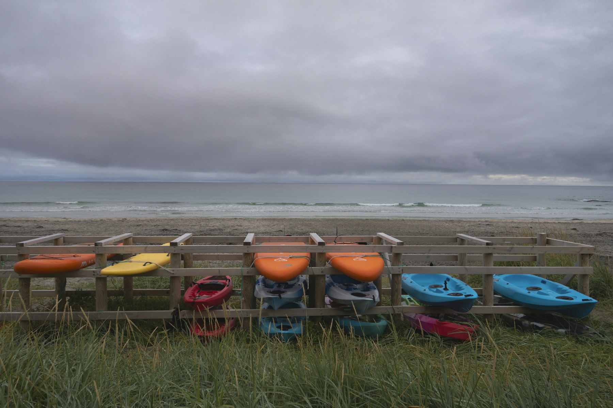
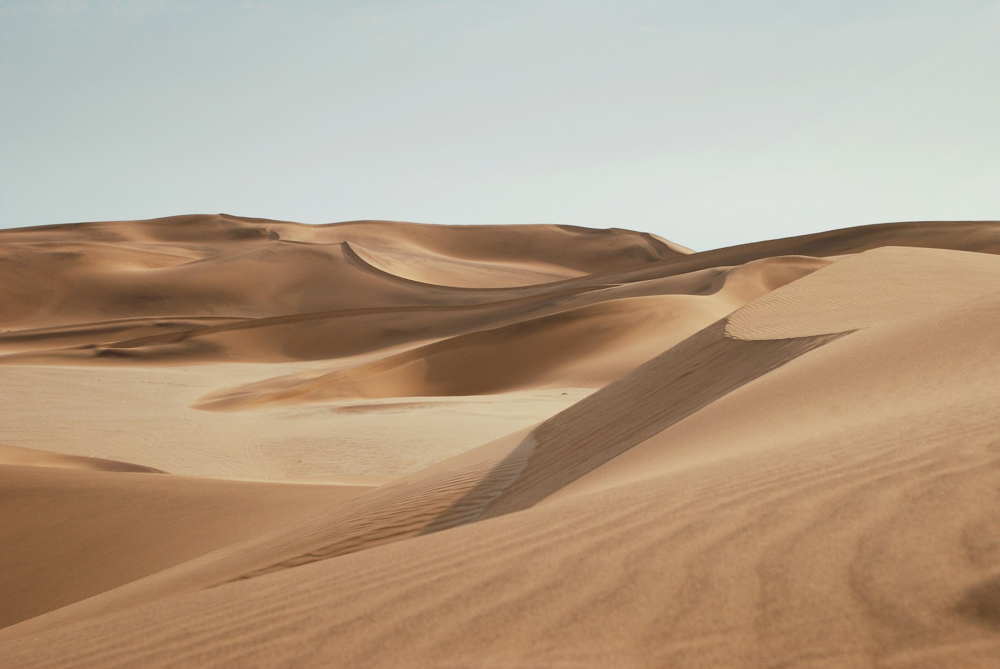
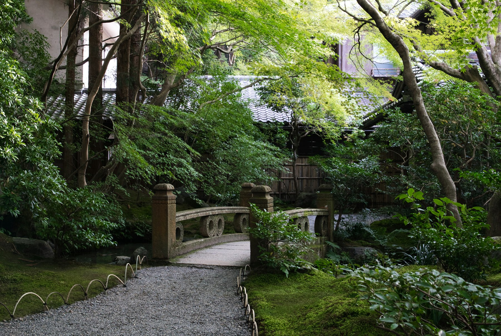
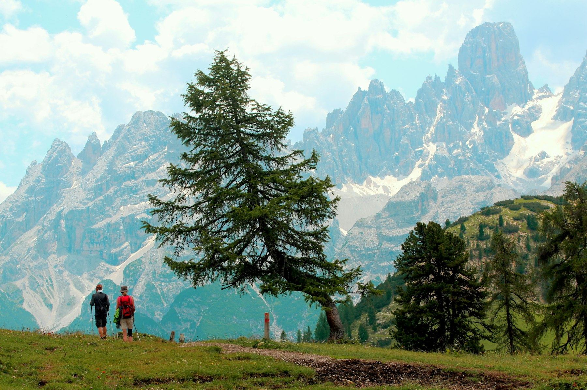

Tour Overview
Lofoten Fjord Cruise leaves Reine on a small private boat. The skipper follows the inner fjord to Vindstad, stops for a short shore walk, and serves lunch on deck on the way back.
Tour Schedule
- Duration:
- 6 Hours
- Tour Type:
- Boat Cruise
- Group Size:
- Max 6 People
- Price:
- $320/per person
- Meeting Point:
- Reine Harbour
- Location:
- Lofoten, Norway

What You’ll Experience
- Sail the inner Reinefjord
- Walk the beach path at Vindstad
- Lunch of local fish on deck
- Watch sea eagles near the cliffs
Fjord Day
- MorningBoarding and safety briefing at Reine
- MiddayShore walk at Vindstad
- AfternoonLunch on deck in the outer fjord
- EveningReturn to Reine Harbour
Things to Keep in Mind
Wear warm layers and a windproof jacket even in summer. The boat has blankets and a heated cabin. Waterproof shoes are best for the wet landing at Vindstad.
More Tours
Namib Dune Crossing
Walk and drive the red dunes of Sossusvlei with a desert ranger.
$85/per person
Explore Tour
Kyoto Garden Evening
Visit two temple gardens after the day crowds leave, with a local guide.
$140/per couple
Explore Tour
Dolomites Family Trail
Take the cable car to an alpine meadow and walk easy trails with children.
$95/per person
Explore Tour
Namib Dune Crossing
Walk and drive the red dunes of Sossusvlei with a desert ranger.
$85/per person
Explore TourKyoto Garden Evening
Visit two temple gardens after the day crowds leave, with a local guide.
$140/per couple
Explore TourDolomites Family Trail
Take the cable car to an alpine meadow and walk easy trails with children.
$95/per person
Explore TourNamib Dune Crossing
Walk and drive the red dunes of Sossusvlei with a desert ranger.
$85/per person
Kyoto Garden Evening
Visit two temple gardens after the day crowds leave, with a local guide.
$140/per couple
Dolomites Family Trail
Take the cable car to an alpine meadow and walk easy trails with children.
$95/per person
Namib Dune Crossing
Walk and drive the red dunes of Sossusvlei with a desert ranger.
$85/per person
Kyoto Garden Evening
Visit two temple gardens after the day crowds leave, with a local guide.
$140/per couple
Dolomites Family Trail
Take the cable car to an alpine meadow and walk easy trails with children.
$95/per person